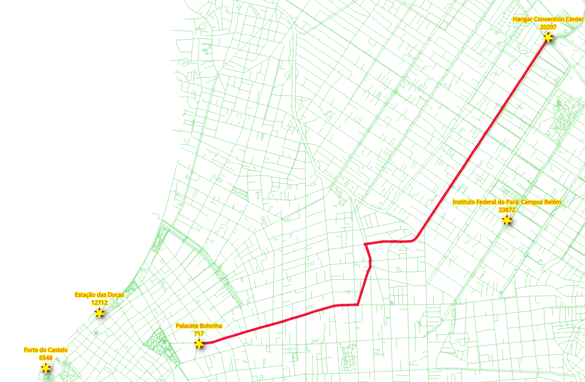

6. Consultas avanzadas de ruteo¶
{kind=link}
Ruteo, no se limita a los peatones y la mayor parte del tiempo se utiliza para la ruta de vehículos.
Chapter Contents
6.1. Ruteo para vehículos¶
Una consulta para el enrutamiento de vehículos generalmente difiere de la ruta para los peatones:
- Los segmentos de carretera se consideran dirigidos
- Los costos pueden ser:
- Distancia
- Tiempo
- Euros
- Pesos
- Dólares
- CO2 emisiones
- Desgaste en el vehículo, etc.
- El atributo
reverse_costdebe tenerse en cuenta en calles de dos vías.- Los costes deben tener las mismas unidades que el atributo
cost - Los valores
costyreverse_costpueden ser diferentes- Debido al hecho de que hay carreteras que son de una manera
- Los costes deben tener las mismas unidades que el atributo
Dependiendo de la geometría, la forma válida:
- (
source, target) segmentoIF cost >= 0 AND reverse_cost < 0 - (
target, source) segmentoIF cost < 0 AND reverse_cost >= 0
Un camino incorrecto se indica con un valor negativo y no se inserta en el grafo para su procesamiento.
Two way roads - IF cost >= 0 AND reverse_cost >= 0 and their values can
be different. For example, it is faster going down hill on a sloped road.
In general, cost and reverse_cost do not need to be length; they can be
84c2aa29125fdae1aae0cb25bc0ef2c097e7537ealmost anything, for example - time, slope, surface, road type, etc., or they can
be a combination of multiple parameters.
Las siguientes consultas indican el número de segmentos de carretera, donde se aplica una regla «unidireccional»:
Número de (
source, target) segmentos concost < 0(line 3).1 2 3
SELECT count(*) FROM ways WHERE cost < 0;
1 2 3 4 5
count ------- 0 (1 row)
Número de segmentos (
target, source) segmentos conreverse_cost < 0(line 3).1 2 3
SELECT count(*) FROM ways WHERE reverse_cost < 0;
1 2 3 4 5
count ------- 9803 (1 row)
6.1.1. Ejercicio 1: Ruteo de vehículos - ida¶
Problema:
- Desde el lugar «Facultad de Derecho» hacia «Plaza Intendente Alvear» en automóvil.
Solución:
- El vehículo va de vértice
6646(línea 10) para1993(línea 11). - Utilice las columnas
cost(línea 6) yreverse_cost(línea 7), que están en la unidadgrados.
1 2 3 4 5 6 7 8 9 10 11 12 | SELECT * FROM pgr_dijkstra(
'
SELECT gid AS id,
source,
target,
cost,
reverse_cost
FROM ways
',
6646,
1993,
directed := true);
|
Resultados de la consulta para el ejercicio 1 del capítulo 6
6.1.2. Ejercicio 2: Ruteo de vehículos - regreso¶
Problema:
- Desde «Plaza Intendente Alvear» hacia «Facultad de Derecho» en automóvil.
{kind=link}
Solución:
- El vehículo va desde vértice
1993(line 10) hacia6646(line 11). - Utilice las columnas
cost(línea 6) yreverse_cost(línea 7), que están en la unidadgrados.
1 2 3 4 5 6 7 8 9 10 11 12 | SELECT * FROM pgr_dijkstra(
'
SELECT gid AS id,
source,
target,
cost,
reverse_cost
FROM ways
',
1993,
6646,
directed := true);
|
Resultados de la consulta para el ejercicio 2 del capítulo 6
Nota
En un grafo dirigido, ir y volver rutas, la mayoría de las veces son diferentes.
6.1.3. Ejercicio 3: Ruteo de vehículos cuando el tiempo es dinero¶
Problema:
- Desde «Plaza Intendente Alvear» hacia «Facultad de Derecho» en taxi.
Solución:
- El vehículo va desde vértice
1993(line 10) hacia6646(line 11). - El costo es de
$100 por hora. - Utilice las columnas
cost_s(línea 6) yreverse_cost_s(línea 7) which are in unitseconds. - The duration in hours is
cost_s / 3600. - The cost in
$iscost_s / 3600 * 100.
1 2 3 4 5 6 7 8 9 10 11 | SELECT * FROM pgr_dijkstra(
'
SELECT gid AS id,
source,
target,
cost_s / 3600 * 100 AS cost,
reverse_cost_s / 3600 * 100 AS reverse_cost
FROM ways
',
1993,
6646);
|
Resultados de la consulta para el ejercicio 3 del capítulo 6
Nota
Comparación con Ejercicio 2: Ruteo de vehículos - regreso:
- El número total de registros es idéntico.
- La secuencia de nodos es idéntica.
- La secuencia de aristas es idéntica.
- El coste y los resultados agg_cost son directamente proporcionales.
6.2. Manipulaciones de costes¶
Al tratar con datos, ser consciente de qué tipo de datos se están utilizando puede mejorar los resultados.
- Los vehículos no pueden circular por vías peatonales

Penalizar o eliminar las vías peatonales hará que los resultados se acerquen a la realidad.
Al convertir datos del formato OSM mediante la herramienta osm2pgrouting, hay una tabla adicional: configuration.
La estructura de tabla configuration se puede obtener con el siguiente comando.
1 | \dS+ configuration
|
1 2 3 4 5 6 7 8 9 10 11 12 13 14 15 16 17 18 19 20 | Table "public.configuration"
Column | Type | Collation | Nullable | Default | Storage | Stats target | Description
-------------------+------------------+-----------+----------+-------------------------------------------+----------+--------------+-------------
id | integer | | not null | nextval('configuration_id_seq'::regclass) | plain | |
tag_id | integer | | | | plain | |
tag_key | text | | | | extended | |
tag_value | text | | | | extended | |
priority | double precision | | | | plain | |
maxspeed | double precision | | | | plain | |
maxspeed_forward | double precision | | | | plain | |
maxspeed_backward | double precision | | | | plain | |
force | character(1) | | | | extended | |
Indexes:
"configuration_pkey" PRIMARY KEY, btree (id)
"configuration_tag_id_key" UNIQUE CONSTRAINT, btree (tag_id)
Referenced by:
TABLE "ways" CONSTRAINT "ways_tag_id_fkey" FOREIGN KEY (tag_id) REFERENCES configuration(tag_id)
Access method: heap
Options: autovacuum_enabled=false
|
{kind=link}
En la imagen de arriba hay un detalle de la tag_id de las carreteras.
Los tipos OSM way:
1 2 3 | SELECT tag_id, tag_key, tag_value
FROM configuration
ORDER BY tag_id;
|
1 2 3 4 5 6 7 8 9 10 11 12 13 14 15 16 17 18 19 20 21 22 23 24 25 26 27 28 29 30 31 32 33 34 35 36 37 38 39 40 | tag_id | tag_key | tag_value
--------+-----------+-------------------
100 | highway | road
101 | highway | motorway
102 | highway | motorway_link
103 | highway | motorway_junction
104 | highway | trunk
105 | highway | trunk_link
106 | highway | primary
107 | highway | primary_link
108 | highway | secondary
109 | highway | tertiary
110 | highway | residential
111 | highway | living_street
112 | highway | service
113 | highway | track
114 | highway | pedestrian
115 | highway | services
116 | highway | bus_guideway
117 | highway | path
118 | highway | cycleway
119 | highway | footway
120 | highway | bridleway
121 | highway | byway
122 | highway | steps
123 | highway | unclassified
124 | highway | secondary_link
125 | highway | tertiary_link
201 | cycleway | lane
202 | cycleway | track
203 | cycleway | opposite_lane
204 | cycleway | opposite
301 | tracktype | grade1
302 | tracktype | grade2
303 | tracktype | grade3
304 | tracktype | grade4
305 | tracktype | grade5
401 | junction | roundabout
(36 rows)
|
Además, en la tabla ways hay una columna que se puede utilizar para JOIN con la tabla configuration.
Los tipos de caminos:
1 2 3 | SELECT distinct tag_id, tag_key, tag_value
FROM ways JOIN configuration USING (tag_id)
ORDER BY tag_id;
|
1 2 3 4 5 6 7 8 9 10 11 12 13 14 15 16 17 18 19 20 21 22 23 24 25 26 27 28 | tag_id | tag_key | tag_value
--------+----------+----------------
101 | highway | motorway
102 | highway | motorway_link
104 | highway | trunk
105 | highway | trunk_link
106 | highway | primary
107 | highway | primary_link
108 | highway | secondary
109 | highway | tertiary
110 | highway | residential
111 | highway | living_street
112 | highway | service
113 | highway | track
114 | highway | pedestrian
115 | highway | services
117 | highway | path
118 | highway | cycleway
119 | highway | footway
120 | highway | bridleway
122 | highway | steps
123 | highway | unclassified
124 | highway | secondary_link
125 | highway | tertiary_link
201 | cycleway | lane
202 | cycleway | track
(24 rows)
|
En este taller, los costes se van a manipular utilizando la tabla configuración.
6.2.1. Ejercicio 4: Ruteo de vehículos sin penalización¶
Problema:
- Desde «Facultad de Derecho» hacia «Plaza Intendente Alvear»
Solución:
- El vehículo va desde el vértice
6646(línea 17) al vértice1993(línea 18). - El costo del vehículo en este caso será en segundos.
- Todas las carreteras tienen una
penalizaciónde1(línea 3). - Los costos (en segundos) deben multiplicarse por
penalty(líneas 12 y 13). - Los costes no cambiarán (las veces 1 dejan el valor sin cambios).
- La tabla
configurationestá vinculada a la tablawaysmediante el campotag_idmediante un campoJOIN(líneas 14 y 15).
1 2 3 4 5 6 7 8 9 10 11 12 13 14 15 16 17 18 | ALTER TABLE configuration ADD COLUMN penalty FLOAT;
-- No penalty
UPDATE configuration SET penalty=1;
SELECT *
FROM pgr_dijkstra(
'
SELECT gid AS id,
source,
target,
cost_s * penalty AS cost,
reverse_cost_s * penalty AS reverse_cost
FROM ways JOIN configuration
USING (tag_id)
',
6646,
1993);
|
Resultados de la consulta para el ejercicio 4 del capítulo 6
6.2.2. Ejercicio 5: Ruteo de vehículos con penalización¶
Concepto:
- Cambiar los valores de coste de la tabla
configurationde forma que el- No se utilizan carreteras peatonales.
- No se fomenta el uso de carreteras residenciales.
- El uso de carreteras «más rápidas» es muy alentador.
- Los valores
penaltyse pueden cambiar con las consultasUPDATE.
Nota
Estos valores son una exageración.
1 2 3 4 5 6 7 8 9 10 11 12 13 | -- Not including pedestrian ways
UPDATE configuration SET penalty=-1.0 WHERE tag_value IN ('steps','footway','pedestrian');
-- Penalizing with 5 times the costs
UPDATE configuration SET penalty=5 WHERE tag_value IN ('residential');
-- Encuraging the use of "fast" roads
UPDATE configuration SET penalty=0.5 WHERE tag_value IN ('tertiary');
UPDATE configuration SET penalty=0.3 WHERE tag_value IN (
'primary','primary_link',
'trunk','trunk_link',
'motorway','motorway_junction','motorway_link',
'secondary');
|
Problema:
- Desde «Facultad de Derecho» hacia «Plaza Intendente Alvear» con la penalización.
{kind=link}
Solución:
- El vehículo va de vértice
6646(línea 11) al vértice1993(línea 12). - Utilice las columnas
cost_s(línea 6) yreverse_cost_s(línea 7) which are in unitseconds. - Los costos deben multiplicarse por
penalty(líneas 6 y 7). - La tabla
configurationestá vinculada a la tablawayspor el campo:code:tag_id mediante un campoJOIN(líneas 8 y 9).
1 2 3 4 5 6 7 8 9 10 11 12 | SELECT * FROM pgr_dijkstra(
'
SELECT gid AS id,
source,
target,
cost_s * penalty AS cost,
reverse_cost_s * penalty AS reverse_cost
FROM ways JOIN configuration
USING (tag_id)
',
6646,
1993);
|
Resultados de la consulta para el ejercicio 5 del capítulo 6
Nota
Comparación con Ejercicio 3: Ruteo de vehículos cuando el tiempo es dinero:
- El número total de registros cambió.
- La secuencia de nodos cambió.
- La secuencia de bordes cambió.
- La ruta está evitando las carreteras residenciales que tienen
tag_id = 110. - The cost did not change proportionally because of the penalty to some of the roads which was uniform (penalty=1) while routing with cost as money.